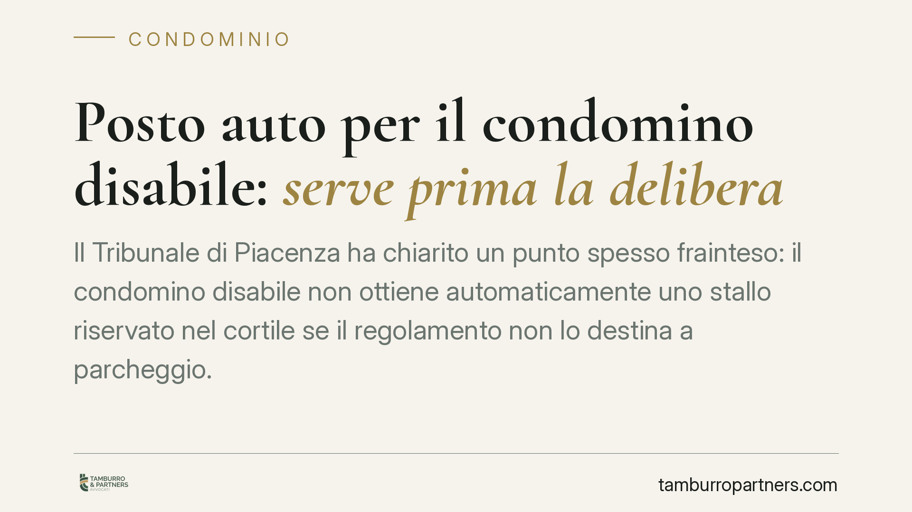

Posto auto per il condomino disabile: serve prima la delibera
Il Tribunale di Piacenza ha chiarito un punto spesso frainteso: il condomino disabile non ottiene automaticamente uno stallo riservato nel cortile se il regolamento non lo destina a parcheggio. Serve prima una delibera che modifichi la destinazione, approvabile con la maggioranza agevolata prevista per l'abbattimento delle barriere architettoniche. Una pronuncia che bilancia tutela della disabilità e regole sugli spazi comuni.

Il caso
I familiari di un condomino disabile avevano chiesto, in via d'urgenza con ricorso ex art. 700 c.p.c., l'assegnazione di uno stallo auto riservato nel cortile condominiale. L'obiettivo era garantire la sosta in prossimità dell'ingresso e facilitare gli spostamenti della persona con disabilità.
Il Tribunale di Piacenza ha respinto la domanda. La ragione non è la negazione della tutela, ma un dato strutturale: il cortile non era destinato a parcheggio né dal regolamento condominiale né da una delibera assembleare. Mancava, in altre parole, il presupposto su cui innestare la richiesta.
Inquadramento normativo
La destinazione d'uso delle parti comuni non è nella disponibilità del singolo. L'art. 1102 c.c. consente a ciascun condomino di usare la cosa comune, ma senza alterarne la destinazione e senza impedire agli altri di farne pari uso. Trasformare un cortile in area di sosta con stalli riservati significa modificarne proprio la destinazione: un'operazione che eccede l'uso individuale e richiede una decisione collettiva.
Qui entra in gioco l'art. 1120, comma 2, n. 2, c.c., che qualifica come innovazioni agevolate quelle dirette a eliminare le barriere architettoniche. Per queste opere la legge prevede un quorum ridotto: l'art. 1136, comma 2, c.c. consente l'approvazione con la maggioranza degli intervenuti e almeno la metà del valore dell'edificio (500 millesimi). È lo stesso favore che governa gli interventi previsti dalla L. 13/1989 e, più in generale, la tutela della persona con disabilità delineata dalla L. 104/1992.
Il punto decisivo è la sequenza. La maggioranza agevolata serve ad approvare la modifica della destinazione e la realizzazione degli stalli. Non è però un automatismo che consente al giudice di creare, in via d'urgenza, un parcheggio dove il condominio non ne ha mai previsto uno. Prima la delibera, poi l'eventuale assegnazione.
Perché questa pronuncia conta
La decisione segna un confine chiaro tra due piani che vengono spesso confusi. Da un lato, il diritto alla tutela della disabilità e all'abbattimento delle barriere, che l'ordinamento favorisce con quorum ridotti e procedure semplificate. Dall'altro, il rispetto delle regole sulla gestione degli spazi comuni, che non possono essere modificati per iniziativa del singolo né forzati dal provvedimento d'urgenza.
Il ricorso ex art. 700 c.p.c. presuppone un diritto già esistente da proteggere contro un pregiudizio imminente. Dove il diritto allo stallo non è ancora sorto, perché manca la destinazione a parcheggio, il giudice d'urgenza non può sostituirsi all'assemblea.
Implicazioni pratiche
Per il condomino disabile e per i suoi familiari, il messaggio è operativo: la strada maestra passa dall'assemblea. La richiesta va formalizzata all'amministratore, con l'indicazione precisa dell'intervento (modifica della destinazione e realizzazione degli stalli) e il riferimento alla normativa agevolata.
Per l'amministratore, la pronuncia conferma l'obbligo di iscrivere la questione all'ordine del giorno e di gestire la votazione con il quorum corretto. Applicare un quorum più alto di quello richiesto espone la delibera a impugnazione; ignorare la richiesta può generare responsabilità.
Per il condominio nel suo complesso, resta il dovere di considerare seriamente le istanze connesse alla disabilità. Il favore normativo esiste proprio per facilitare l'approvazione, non per ostacolarla.
Cosa fare in concreto
- Verificate la destinazione attuale del cortile nel regolamento e negli atti d'acquisto: è questo il primo dato da cui dipende tutto il resto.
- Formalizzate la richiesta all'amministratore per iscritto, chiedendo l'inserimento all'ordine del giorno della modifica della destinazione e dell'assegnazione dello stallo.
- Documentate la condizione di disabilità con certificazione idonea (verbale L. 104/1992), così da fondare l'applicazione del quorum agevolato.
- Richiamate espressamente l'art. 1120, comma 2, n. 2, c.c. nella convocazione, per guidare l'assemblea sul quorum corretto ex art. 1136, comma 2, c.c.
- Valutate l'azione giudiziaria solo come rimedio successivo, in caso di diniego illegittimo o di inerzia, dopo aver attivato il percorso assembleare.
Consigliamo di affrontare la questione in sequenza ordinata: prima la delibera che crea il presupposto, poi la tutela del diritto. Invertire i passaggi, come dimostra il caso di Piacenza, conduce quasi sempre al rigetto.
Disclaimer
Contributo informativo a cura di Tamburro & Partners - Avv. Giuseppe Tamburro. Non costituisce parere legale.
Ogni condominio ha una storia a sé.
Se gestisci un'amministrazione e vuoi un confronto su una specifica questione condominiale, scrivi allo studio. Ti rispondiamo entro un giorno lavorativo.